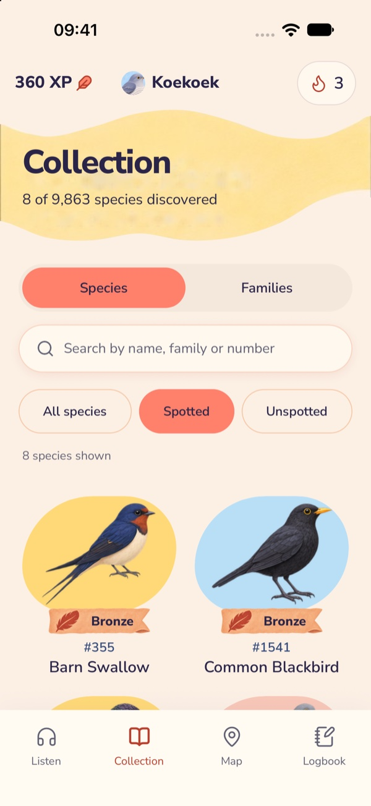
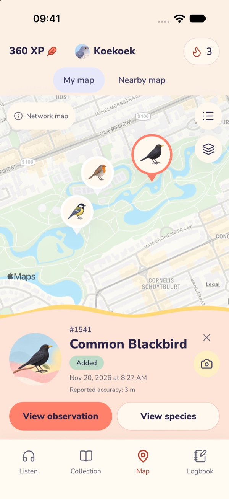

Coffee finished?
Shoes on.
I’m Professor Koekoek. I help you recognise birds by their song. Shall we see who’s outside?


Birdsong recognition
That one in the hedge.
You’ve heard it all morning. Now put a name to it. Tap Listen, check the suggested birds and save your sighting.
Your collection
Oh, it’s you again.
Save your sightings and watch your collection grow. Discovered birds get their own illustration. Silhouettes show the species you have yet to find.


Bird details
Get to know the bird.
Read about its habitat and diet, listen to its call and see where it lives. Each species has its own illustrated page in your field guide.
Your map & logbook
Where was that blackbird?
See your own sightings and birds spotted nearby on the map. Keep photos and notes in your logbook.

Birdhouses
Room for your flock.
Start a birdhouse with up to five friends. Work on weekly challenges and decorate the place together. There’s a weekly competition, too, if your flock fancies it.

Need a hand?
Find practical answers on the support page. If your question isn’t there, drop us an email.
Visit support